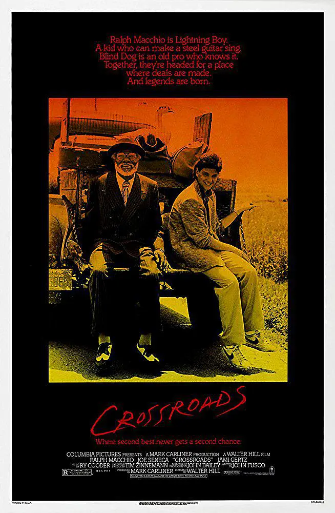

Home 国内/港台 美国 日本 其他国家
本文中电影一般是感觉有点意义的才记录下，部分是看过2遍以上。仅仅是“好看”就不写了，比如“泰坦尼克号”、“洛奇”等简单叙事或者打斗、飞车之类，就是爆米花。
多数介绍是从网上摘抄或转载，链接一般放豆瓣，我个人观点基本没有v-v.列表没有先后好坏，只是想到什么增加什么。
豆瓣上的TOP250: 豆瓣电影 Top 250
闲话不讲，直接开列：
国内
1. 活着 (1994)

根据余华同名小说改编。 富少福贵（葛优）嗜赌成性，妻子家珍（巩俐）屡劝无果后带着女儿凤霞离开了他，当夜，福贵输光所有家产气死父亲，被迫靠变卖母亲首饰租间破屋过活。一年后，家珍手拉凤霞怀抱刚出世的儿子有庆回到家中，福贵痛改前非，开始靠演皮影戏过起安份守己的日子。 但好景不常，内战时期，福贵被国民党抓去当劳工，一番辗转终回到家乡与一家人团圆后，凤霞因病变成哑巴，而在后来的大跃进运动和文化大革命中，他虽获某些小福，逆境却也一直与他如影相随。
2.
3.
4.
5. 我不是药神 (2018)

普通中年男子程勇（徐峥 饰）经营着一家保健品店，失意又失婚。不速之客吕受益（王传君 饰）的到来，让他开辟了一条去印度买药做“代购”的新事业，虽然困难重重，但他在这条“买药之路”上发现了商机，一发不可收拾地做起了治疗慢粒白血病的印度仿制药独家代理商。赚钱的同时，他也认识了几个病患及家属，为救女儿被迫做舞女的思慧（谭卓 饰）、说一口流利“神父腔”英语的刘牧师（杨新鸣 饰），以及脾气暴烈的“黄毛”（章宇 饰），几个人合伙做起了生意，利润倍增的同时也危机四伏。程勇昔日的小舅子曹警官（周一围 饰）奉命调查仿制药的源头，假药贩子张长林（王砚辉 饰）和瑞士正牌医药代表（李乃文 饰）也对其虎视眈眈，生意逐渐变成了一场关于救赎的拉锯战。 本片改编自慢粒白血病患者陆勇代购抗癌药的真实事迹。
6.
7.
8.
9.
10.
11.
12.
13.
14.
15.
16.
17.
18.
19.
20.
21.
22.
23.
24.
25.
26.
27.
28.
29.
30.
国外
1. 革命往事 Giù la testa (1971)
我的观点：借用电影中的台词：
I know I am talking about, we are talking about revolutions!
The people who read the books go to the people can't read the books, the poor people, says "we have to have a change." So the poor people make the change. And the people read the books they all sit around the big polished table and they talk and talk and talk and eat and eat and eat. Then what has happened to the poor people? They died.
That's your revolution. So please don't tell me about revolutions.
故事发生在二十世纪初的墨西哥革命中。一辆长途马车里，高贵的先生女士们对一位沉默寡言的农民大放厥词，然而突然农民摇身一变，显出家庭式匪帮头目胡安（Rod Steiger 饰）的真面目。胡安打劫后路遇爱尔兰革命军爆破专家约翰（James Coburn 饰），后者的爆破能力令抢劫梅萨维德银行如探囊取物，于是胡安苦苦尾随，不经意间却卷入了配合维拉革命军的梅萨维德暴动。胡安如愿与约翰搭档洗劫银行，但他所有的收获却是解放150名政治犯人。 政府军上校刚特率军镇压革命，胡安与革命队伍付出了惨痛的代价。在逆境中，约翰与胡安产生了真正的革命情谊，二人在前往美国的路上折返阻击刚特上校，当约翰中弹之时，这位老战士看到了昔日在爱尔兰的温馨场景……本片获1972年意大利大卫奖最佳导演奖。
2. 十字街头 Crossroads (1986)

我的观点：音乐类，当初学习电吉他时看的，看过三遍，对蓝调有更深的认识。
出生于长岛的白人青年尤金·马东（拉尔夫·马奇奥 Ralph Macchio 饰）在古典吉他的演奏上拥有极高的天分，但是他如此热爱蓝调布鲁斯，尤其对传奇黑人布鲁斯歌手罗伯特·约翰逊（蒂姆·罗斯 Tim Russ 饰）着迷不已。据说约翰逊生前曾录下30首歌曲，但只有前29首流传于世。为了找到那首失落的歌曲，他辗转找到约翰逊当年的搭档——前布鲁斯乐队“盲狗福尔敦”成员威利·布朗（Joe Seneca 饰），甚至不惜以勤杂工的身份进入布朗所在的养老院。通过音乐，一老一少拉近彼此距离，威利则瞅准时机让马东带他离开养老院。 他们即将启程前往盲狗福尔敦的发源地密西西比州，寻找曾与音乐家们做过交易的魔鬼，寻找那首失落的传奇之歌……
3. 海上钢琴师 La leggenda del pianista sull'oceano (1998)

我的观点：主要是其中的配乐很好听。
本片讲述了一个钢琴天才传奇的一生。 1900年，Virginian号豪华邮轮上，一个孤儿被遗弃在头等舱，由船上的水手抚养长大，取名1900（蒂姆•罗斯 饰）。1900慢慢长大，显示出了无师自通的非凡钢琴天赋，在船上的乐队表演钢琴，每个听过他演奏的人，都被深深打动。爵士乐鼻祖杰尼听说了1900的高超技艺，专门上船和他比赛，最后自叹弗如，黯然离去。 可惜，这一切的事情都发生在海上，1900从来不愿踏上陆地，直到有一天，他爱上了一个女孩，情愫在琴键上流淌。他会不会为了爱情，踏上陆地开始新的生活，用他的琴声惊艳世界？
4. 当幸福来敲门 The Pursuit of Happyness (2006)

我的观点：低落时看看。
克里斯•加纳（威尔·史密斯 Will Smith 饰）用尽全部积蓄买下了高科技治疗仪，到处向医院推销，可是价格高昂，接受的人不多。就算他多努力都无法提供一个良好的生活环境给妻儿，妻子（桑迪·牛顿 Thandie Newton 饰）最终选择离开家。从此他带着儿子克里斯托夫（贾登·史密斯 Jaden Smith 饰）相依为命。克里斯好不容易争取回来一个股票投资公司实习的机会，就算没有报酬，成功机会只有百分之五，他仍努力奋斗，儿子是他的力量。他看尽白眼，与儿子躲在地铁站里的公共厕所里，住在教堂的收容所里…… 他坚信，幸福明天就会来临。
5. 穆赫兰道 Mulholland Dr. (2001)

我的观点：没看懂。
深夜的穆赫兰道发生一桩车祸，女子丽塔（劳拉·赫利 Laura Harring 饰）在车祸中失了忆。她跌跌撞撞来到一个公寓里藏身。 一名男子说他常常梦见一个叫云奇的地方，那里有个恶魔盯着他。于是就来到云奇，果真见到墙后有怪物出现，男子当场晕死。 另有一名杀手杀死了他面前 的男人，然而蹩脚的他却惹来了不少一连串的麻烦。 故事回到一个刚到好莱坞“寻梦”的女子贝蒂（娜奥米·沃茨 Naomi Watts 饰），她的姨父姨母在电影圈有广泛人缘，让贝蒂的发展如虎添翼，试镜大受好评。同时，她所住的公寓，正好是丽塔藏身之地。贝蒂收留了丽塔，二人感情融洽。面对记不起自己是谁的丽塔，贝蒂决定帮助她寻找回自己的记忆。 一名导演想自己决定新戏的女主角，却被他人强行安排人选。工作不顺意的他还发现妻子和清洁工睡在一起。 这些看似松散的事件，就像一个迷宫，引向一个让人猜不透的世界…...
6. 肖申克的救赎 The Shawshank Redemption (1994)

一场谋杀案使银行家安迪（蒂姆•罗宾斯 Tim Robbins 饰）蒙冤入狱，谋杀妻子及其情人的指控将囚禁他终生。在肖申克监狱的首次现身就让监狱“大哥”瑞德（摩根•弗里曼 Morgan Freeman 饰）对他另眼相看。瑞德帮助他搞到一把石锤和一幅女明星海报，两人渐成患难 之交。很快，安迪在监狱里大显其才，担当监狱图书管理员，并利用自己的金融知识帮助监狱官避税，引起了典狱长的注意，被招致麾下帮助典狱长洗黑钱。偶然一次，他得知一名新入狱的小偷能够作证帮他洗脱谋杀罪。燃起一丝希望的安迪找到了典狱长，希望他能帮自己翻案。阴险伪善的狱长假装答应安迪，背后却派人杀死小偷，让他唯一能合法出狱的希望泯灭。沮丧的安迪并没有绝望，在一个电闪雷鸣的风雨夜，一场暗藏几十年的越狱计划让他自我救赎，重获自由！老朋友瑞德在他的鼓舞和帮助下，也勇敢地奔向自由。
7. 闻香识女人 Scent of a Woman (1992)

查理（克里斯•奥唐纳 Chris O'Donnell 饰）是一个普通的中学生，他因为见证着一件恶作剧但又不想出卖朋友，于是面临着一道艰难的选择题——要么坦白，要么被学校勒退。而史法兰（阿尔•帕西诺 Al Pacino 饰）是一个退伍军官，因为意外失明，人生从顶点的辉煌滑落谷底。 自从两人的人生有了交集，命运的转折慢慢清晰。史法兰打算结束失去了意义的生活，于是在查理的陪伴下，尽情享受着人生最后一趟出行。他吃最美味的佳肴，买光鲜的汽车，在狭窄的街道上飚车，住在豪华的套房里，跟随陌生女子的袅袅香水味，跳一段优雅性感的探戈……极乐的疯狂后，他拿枪对准了自己的头颅。然而，查理声嘶力竭的劝阻改变了一切，曙光亦渐渐在这个老人心中重新升起，二人情深如父子。 史法兰在学校礼堂激昂演说，挽救了查理的前途，讽刺了学校的伪善。二人在互相鼓舞中得到重生。
8.
9.
10.
11.
12.
13.
14.
15.
16.
17.
18.
19.
20.
21.
22.
23.
24.
25.
26.
27.
28.
29.
30.
31.
32.
33.
34.
35.
36.
37.
38.
39.
40.
41.
42.
43.
44.
45.
46.
47.
48.
49.
日本
1.
2.
其他国家
1. 贫民窟的百万富翁 Slumdog Millionaire (2008)

2006年，印度孟买。 印度青年杰玛•马利克（戴夫•帕特尔饰）还差一个问题就能赢得2千万卢比。他是怎么做到的？A：他作弊；B：他幸运；C：他是天才；D：一切命中注定。 这是《谁想成为百万富翁》电视猜谜节目的人生版。杰玛•马利克在已经赢得1千万卢比的情况下被警方以欺诈罪逮捕，严刑拷问下杰玛说出他获得1千万卢比的真相——他确实知道答案，但他只知道这些！ 出身贫民窟的杰玛年幼就生活艰苦，他与哥哥沙里姆、少女拉媞卡(芙蕾达•平托饰)三人却一起经历了几十年印度的变迁。之前每一个问题，都好像是杰玛的记忆碎片，牵动他关于亲情、爱情与人生的回忆。 而现在，杰玛一方面要洗清自己的犯罪嫌疑，一方面要拯救与拉媞卡的爱。在金钱与爱之前，杰玛能够沉着冷静，选择出正确的答案吗？
2. 三傻大闹宝莱坞 3 Idiots (2009)

本片根据印度畅销书作家奇坦·巴哈特（Chetan Bhagat）的处女作小说《五点人》（Five Point Someone）改编而成。法兰（马德哈万 R Madhavan 饰）、拉杜（沙曼·乔希 Sharman Joshi 饰）与兰乔（阿米尔·汗 Aamir Khan 饰）是皇家工程学院的学生，三人共居一室，结为好友。在以严格著称的学院里，兰乔是个非常与众不同的学生，他不死记硬背，甚至还公然顶撞校长“病毒”（波曼·伊拉尼 Boman Irani 饰），质疑他的教学方法。他不仅鼓动法兰与拉杜去勇敢追寻理想，还劝说校长的二女儿碧雅（卡琳娜·卡普 Kareena Kapoor 饰）离开满眼铜臭的未婚夫。兰乔的特立独行引起了模范学生“消音器”（奥米·维嘉 Omi Vaidya 饰）的不满，他约定十年后再与兰乔一决高下，看哪种生活方式更能取得成功。 本片获孟买电影博览奖最佳影片、最佳导演、最佳配角（波曼·伊拉尼）、最佳剧本等六项大奖，并获国际印度电影协会最佳影片、最佳导演、最佳剧情、最佳摄影等十六项大奖。
3.
4.
5. 摔跤吧！爸爸 Dangal (2016)

马哈维亚（阿米尔·汗 Aamir Khan 饰）曾经是一名前途无量的摔跤运动员，在放弃了职业生涯后，他最大的遗憾就是没有能够替国家赢得金牌。马哈维亚将这份希望寄托在了尚未出生的儿子身上，哪知道妻子接连给他生了两个女儿，取名吉塔（法缇玛·萨那·纱卡 Fatima Sana Shaikh 饰）和巴比塔（桑亚·玛荷塔 Sanya Malhotra 饰）。让马哈维亚没有想到的是，两个姑娘展现出了杰出的摔跤天赋，让他幡然醒悟，就算是女孩，也能够昂首挺胸的站在比赛场上，为了国家和她们自己赢得荣誉。 就这样，在马哈维亚的指导下，吉塔和巴比塔开始了艰苦的训练，两人进步神速，很快就因为在比赛中连连获胜而成为了当地的名人。为了获得更多的机会，吉塔进入了国家体育学院学习，在那里，她将面对更大的诱惑和更多的选择。
6.
7.
8.
9.
10.
11.
12.
13.
14.
15.
16.
17.
18.
19.
20.
21.
22.
23.
24.
25.
26.
27.